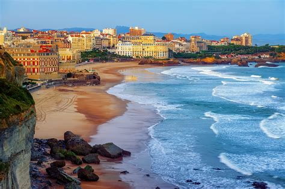
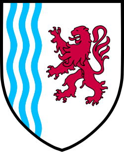

Nouvelle-Aquitaine
Vue d'ensemble
Nouvelle-Aquitaine, la plus grande région de France, s'étend de la côte atlantique jusqu'aux montagnes des Pyrénées. Elle est célèbre pour ses vignobles, ses plages de surf et ses villes historiques. Des villes comme Bordeaux, Limoges et Biarritz offrent un mélange de tradition, d'élégance et de culture.
Informations Rapides
- Capitale: Bordeaux
- Langue régionale: Français (avec des locuteurs d’occitan et de basque)
- Population: ~6 millions
- Célèbre pour: Vin, surf, foie gras
- Le saviez-vous? Les grottes de Lascaux abritent certaines des peintures préhistoriques les plus célèbres au monde !
Plats Populaires
Foie Gras

Canelés

Piperade

Vins de Bordeaux

Monuments célèbres
Dune du Pilat

Place de la Bourse

Grottes de Lascaux

Côte de Biarritz

Château de Beynac

Meilleure période pour visiter
Le printemps (avril–juin) et le début de l'automne (septembre–octobre) sont idéaux pour les visites viticoles et culturelles. L'été (juillet–août) est parfait pour le surf et les plages de l'Atlantique.
Symboles Régionaux
- Drapeau:
- Balson: 